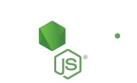

<!DOCTYPE html>
<html lang="en">
<head>
  <meta charset="UTF-8">
  <title>Maintance Dashboard</title>
  <meta name="viewport" content="width=device-width, initial-scale=1, maximum-scale=1, user-scalable=no">
  <link href='https://fonts.googleapis.com/css?family=Ubuntu|Ubuntu+Mono' rel='stylesheet' type='text/css'>
  <link href="main.css" rel="stylesheet">
</head>
<body>
  <header>
    <!---->
  </header>
  <main>
    <info type="gen"></info>
    <info type="poll"></info>
  </main>
  <footer>
    <p>maintance dashboard for tentacle@<a href="https://www.sopaco.io" target="_blank">Sopaco Global Networks</a></p>
  </footer>
  <script src="https://cdn.jsdelivr.net/riot/2.4.1/riot+compiler.min.js"></script>
  <script src="https://cdn.jsdelivr.net/superagent/0.18.0/superagent.min.js"></script>
  <script type="riot/tag" src="info.tag"></script>
  <script>
    riot.mount('*')
  </script>
</body>
</html>
